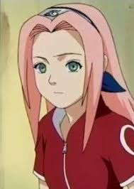

-
Naruto
Es el personaje protagonista del manga y anime Naruto, creado por el mangaka Masashi. Tanto en el manga como en el anime, Naruto es un ninja de Konoha y forma parte del «Equipo 7»,
-
Sasuke Uchiha
Sasuke es un miembro del clan Uchiha, uno de los clanes ninja más fuertes de la Aldea Oculta de la Hoja, es el hermano menor de Itachi Uchiha y el padre de Sarada uchiha.
-

Sakura Haruno
Tanto en el manga como en el anime Naruto, Sakura es representada como una kunoichi afiliada a Konohagakure, y una parte del Equipo 7 junto a Naruto y Sasuke. Su nombre significa cerezo
-

Kakashi Hatake
Es un shinobi de Konohagakure. Fue un Jōnin, ex-ANBU y el líder del Equipo 7. En su adolescencia fue alumno de Minato Namikaze y compañero de equipo de Obito Uchiha y Rin Nohara.
-
Hinata Hyuga
Personaje del manga y anime Naruto, creado por el mangaka Masashi Kishimoto y perteneciente a la rama principal del Clan Hyūga. Su nombre significa «un lugar soleado»
-
Gaara
Gaara es un ninja perteneciente a la Aldea Oculta de la Arena, además de ser el hijo del antiguo líder de dicha aldea, el Cuarto Kazekage, y actualmente es el Quinto Kazekage.
Naruto
Naruto Uzumaki (う ず ま き ナ ル ト, Uzumaki Naruto ) es un shinobi de Konohagakure y la reencarnación actual de Asura . Se convirtió en el jinchūriki de Kurama el día de su nacimiento, un destino que provocó que fuera condenado al ostracismo y descuidado por la mayoría de Konoha durante su infancia. Después de unirse al Equipo Kakashi , Naruto trabaja duro para ganar el respeto y el reconocimiento de la aldea con el eventual sueño de convertirse en Hokage.. En los años siguientes, Naruto se convierte en un ninja capaz que eventualmente es considerado como un héroe, tanto por los aldeanos como por el mundo shinobi en general. El objetivo de Naruto, aparte de convertirse en Hokage, era salvar a su mejor amigo y compañero de equipo, Uchiha Sasuke , quien sucumbió al odio y la oscuridad , lo que finalmente logró después de derrotarlo en su batalla final. Años después de la Cuarta Guerra Mundial Shinobi , Naruto logró su sueño y se convirtió en el Séptimo Hokage (七 代 目 火影, Nanadaime Hokage ; Literalmente significa "Séptima Sombra de Fuego"), al casarse con Haruno Sakura y formar su propia familia.
- Liberación de ebullición
- Lanzamiento de lava
- Lanzamiento de imán
Sasuke Uchiha
Sasuke Uchiha (うちはサスケ, Uchiha Sasuke ) es uno de los últimos miembros supervivientes de Konoha 's clan Uchiha y la reencarnación actual de Indra . Se convirtió en un shinobi para poder algún día volverse lo suficientemente fuerte como para vengarse de su hermano mayor, Itachi , que había matado a todo su clan . Inicialmente miembro del Equipo 7 de Konoha , Sasuke desertó de la aldea para obtener el poder de Orochimaru , y luego también se unió a Akatsuki , convirtiéndose en un criminal internacional en el proceso. Más tarde demuestra ser instrumental para terminar la Cuarta Guerra Mundial Shinobi para lograr su propio objetivo de revolución, pero finalmente es derrotado y redimido una vez más por su mejor amigo, Uzumaki Naruto ..
Habilidades:
- Sharingan
- Mugen Mangekyō Sharingan
- Rinnegan
Sakura Haruno
Sakura es la única hija de Mebuki y Kizashi Haruno . Tuvo una infancia ordinaria, criada por sus padres sin ninguna tragedia o complicación grave. Cuando entró en la Academia de Konoha , algunas de las chicas de su clase comenzaron a molestarla debido a su frente ancha. Sakura trató de combatir sus burlas escondiendo su frente con su flequillo, pero esto demostró a las otras chicas que la molestaba y provocaba que la molestaran aún más. Ino Yamanaka , una de sus compañeras de clase, vio esto, defendió a Sakura de sus matones y la animó a abrazar su frente en lugar de esconderla. En los años siguientes, la orientación y la amistad de Ino ayudaron a Sakura a sentirse cómoda consigo misma y convertirse en su propia persona. Aunque se sentía en deuda con Ino por ayudarla, Sakura comenzó a sentir que estaba viviendo a la sombra de Ino cuando, en cambio, quería ser igual a Ino. En algún momento después de ingresar a la Academia, Sakura conoció a Sasuke Uchiha.y ella se enamoró de él. Cuando se lo contó a sus amigos, se sorprendió al saber cuán popular era Sasuke con las chicas. Sakura escuchó el rumor de que Sasuke se sentía atraído por las chicas con cabello largo y comenzó a dejar que su cabello creciera para llamar su atención. Un par de años después, cuando supo que Ino estaba enamorado de Sasuke, Sakura terminó su amistad para poder competir por el amor de Sasuke, comenzando así una amarga rivalidad entre ellos. En el anime, Sakura se acercó a Ino, diciéndole que le gustaba Sasuke. Sakura lo tomó para terminar su amistad, comenzando su aversión el uno hacia el otro al comienzo de la serie. [10]
Habilidades:
- Liberación de agua
- Lanzamiento de Yin
- Lanzamiento de Yang
Kakashi Hatake
( はたけカカシ , Hatake Kakashi ) es un shinobi de Konoha 's Hatake clan . Famoso como Kakashi del Sharingan ( 写 輪 眼 の カ カ シ , Sharingan no Kakashi ), es uno de los ninjas más talentosos de Konoha; regularmente buscaba consejo y liderazgo a pesar de su aversión personal a la responsabilidad. A sus alumnos del Equipo 7 , Kakashi les enseña la importancia del trabajo en equipo, una lección que recibió, junto con el Sharingan, de su amigo de la infancia, Obito Uchiha . Después de la Cuarta Guerra Mundial Shinobi , Kakashi se convierte en la Sexta de KonohaHokage (六 代 目 火影 , Rokudaime Hokage , que literalmente significa: Sexta Sombra de Fuego).
Habilidades:
- Sharingan
- Mugen Mangekyō Sharingan
- Lanzamiento de rayo
Hinata Hyūga
Uzumaki Hinata , née Hyūga ( 日 向 )) es una kunoichi de Konohagakure . Ella perdió su posición como heredera del clan Hyūga debido a su disposición mansa que la hacía inadecuada para las responsabilidades de dirigir el clan. Sin embargo, Hinata perseveró y de su observación de Naruto Uzumaki especialmente, Hinata encontró un ejemplo a seguir. A través de su membresía con el Equipo 8 , ella buscó ser lo suficientemente fuerte como para cambiarse a sí misma, aunque fuera de a poco. Unos años después de la Cuarta Guerra Mundial Shinobi , Hinata se unió alUzumaki clan después de casarse con Naruto.
Habilidades:
- Ojo blanco
- Lanzamiento de fuego
- Lanzamiento de rayo
Gaara
Es un shinobi de Sunagakure . Fue hecho el jinchūriki del Shukaku de una cola antes de nacer, lo que provocó que los aldeanos de Suna lo temieran como un monstruo. Sin nadie con quien conectarse, Gaara creció odiando al mundo y cuidándose solo de sí mismo, dando sentido a su vida al matar a cualquiera con quien se encontró. Después de ser derrotado por Naruto Uzumaki , un jinchūriki como él que encontró fuerza en sus amistades, Gaara comienza a emularlo. Se convierte en el quinto Kazekage de Suna ( 五代 目 風影 , Godaime Kazekage , que literalmente significa: Fifth Wind Shadow) para que pueda proteger la aldea y a todos los que viven allí, disipando los temores que echó sobre los aldeanos.
Habilidades:
- Lanzamiento de imán
- Lanzamiento de viento
- Lanzamiento de tierra